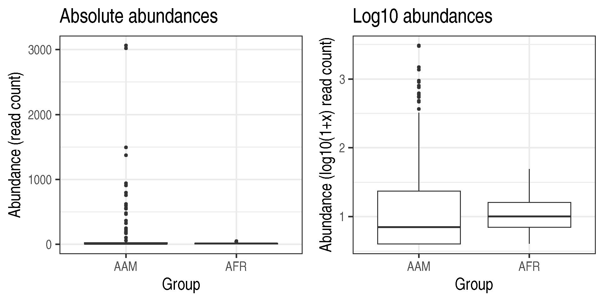
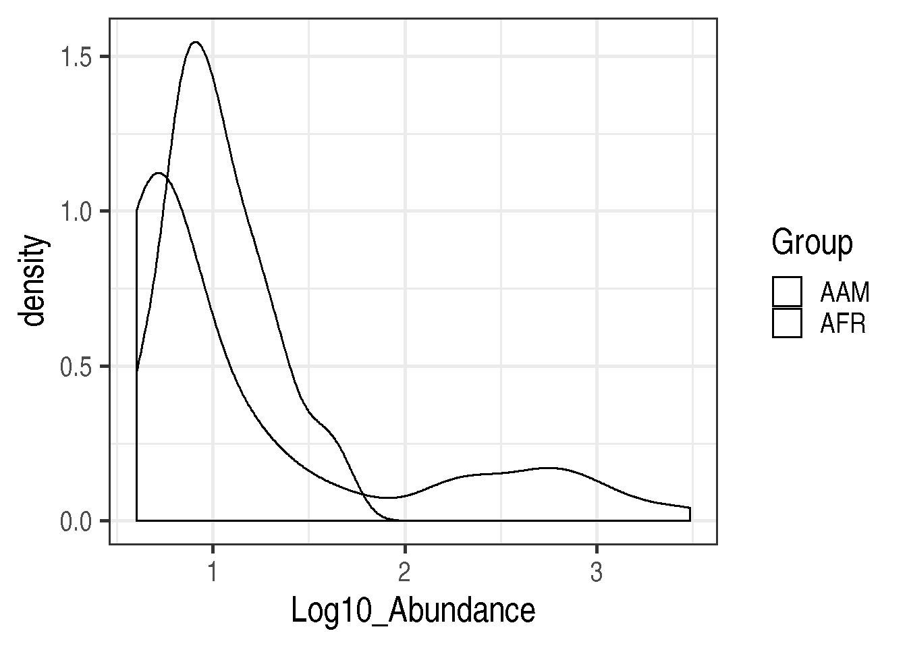
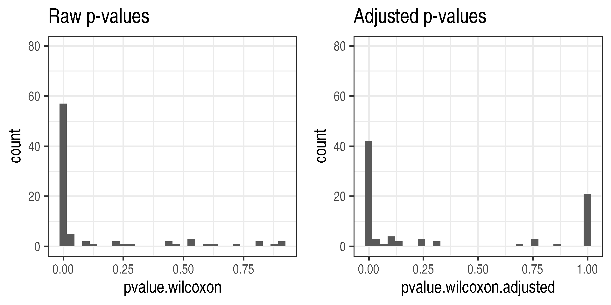
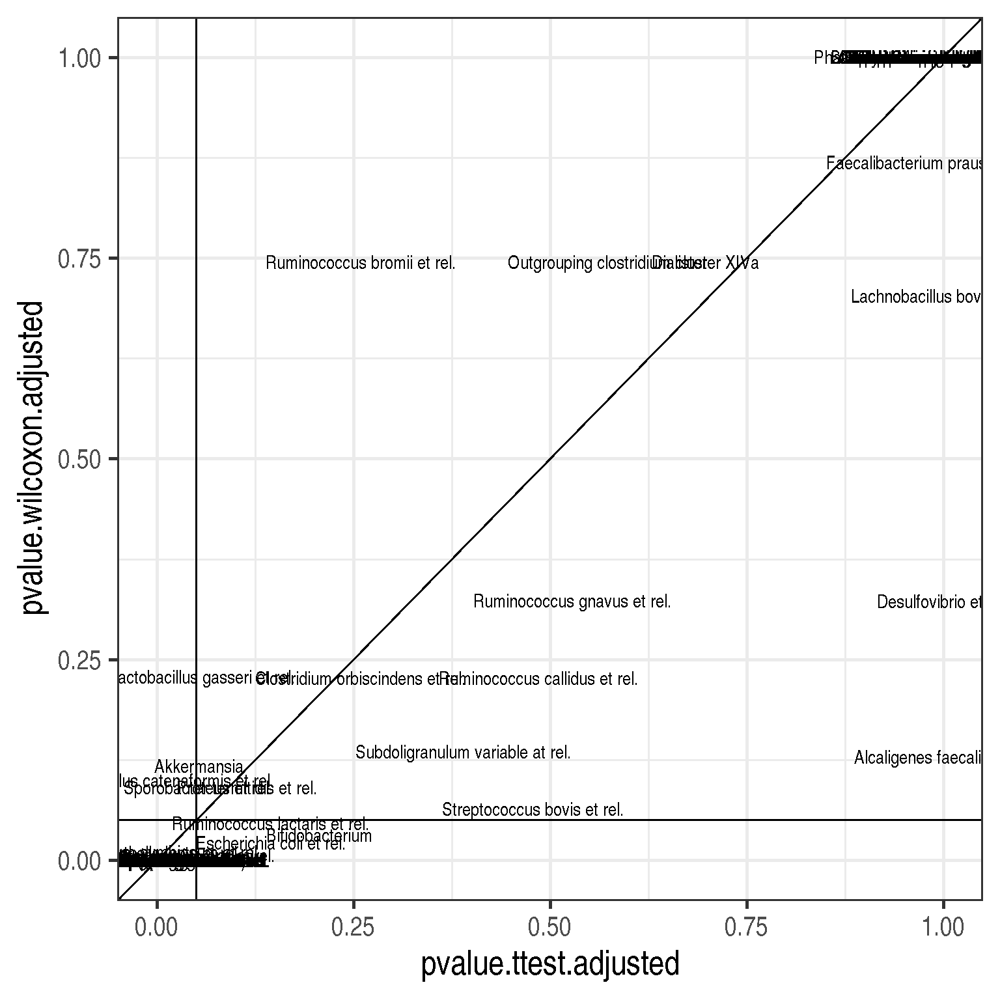

4 Differential abundance testing for univariate data
This section covers basic univariate tests for two-group comparison, covering t-test, Wilcoxon test, and multiple testing. You can try out the suggested exercises in the hands-on session. These are followed by example solutions which we will cover in more detail in the class.
4.1 Load example data
The following example compares the abundance of a selected bug between two conditions. We assume that the data is already properly normalized.
library(microbiome)
theme_set(theme_bw(20))
data(dietswap)
d <- dietswap
# Pick microbial abundances for a given taxonomic group
taxa <- "Dialister"
# Construct a data.frame with the selected
# taxonomic group and grouping
df <- data.frame(Abundance = abundances(d)[taxa,],
Group = meta(d)$nationality)
library(knitr)
kable(head(df))| Abundance | Group | |
|---|---|---|
| Sample-1 | 5 | AAM |
| Sample-2 | 23 | AFR |
| Sample-3 | 6 | AFR |
| Sample-4 | 24 | AFR |
| Sample-5 | 6 | AFR |
| Sample-6 | 38 | AFR |
4.2 Visual comparison of two groups
Task: Compare the groups visually Tips: boxplot, density plot, histogram
Visualization of the absolute abundances is shown on the left. Let us try the log10 transformation. Now, the data contains many zeros and taking log10 will yield infinite values. Hence we choose the commonly used, although somewhat problematic, log10(1+x) transformation (right).
library(ggplot2)
p1 <- ggplot(df, aes(x = Group, y = Abundance)) +
geom_boxplot() +
labs(title = "Absolute abundances", y = "Abundance (read count)")
# Let us add the log10(1+x) version:
df$Log10_Abundance <- log10(1 + df$Abundance)
p2 <- ggplot(df, aes(x = Group, y = Log10_Abundance)) +
geom_boxplot() +
labs(title = "Log10 abundances", y = "Abundance (log10(1+x) read count)")
library(patchwork)
p1 + p2
4.3 Statistical comparison of two groups
Task: Test whether abundance differences are statistically significant between the two groups Tips: t-test (t.test); Wilcoxon test (wilcox.test). Find information on how to use by typing help(t.test) or help(wilcox.test); or by looking for examples from the web.
The groups seem to differ. First, let us perform the t-test. This is based on Gaussian assumptions. Each group is expected to follow Gaussian distribution.
Significance p-value with t-test:
print(t.test(Log10_Abundance ~ Group, data = df)$p.value)## [1] 0.02554997According to this, the abundances is not significantly different between the two groups (at \(p<0.05\) level).
4.4 Investigate assumptions of the t-test
Task: Assess whether the abundance data is Gaussian or log-normal within each group You can use for instance histogram (hist) or density plots (plot(density())).
Now let us investigate the Gaussian assumption of the t-test in more detail. Let us try another visualization; the density plot.
p <- ggplot(df, aes(fill = Group, x = Log10_Abundance)) +
geom_density(alpha = 0.5)
print(p)
Apparently, the data is not even approximately Gaussian distributed. In such cases, a common procedure is to use non-parametric tests. These do not make assumptions of the data distribution but instead compare the ordering of the samples.
So, let us look at the significance p-value with Wilcoxon test (log10 data):
print(wilcox.test(Log10_Abundance ~ Group, data = df)$p.value)## [1] 0.02979053But since the test is non-parametric, we can as well use the original absolute abundances; thelog transformation does not change sample ordering on which the Wilcoxon test is based.
Let us verify that the absolute abundances yield the same p-value for Wilcoxon test:
print(wilcox.test(Abundance ~ Group, data = df)$p.value)## [1] 0.029790534.5 Compare results between parametric and non-parametric tests
Let us compare how much the results would differ in the whole data between t-test (parametric) and Wilcoxon test (non-parametric).To remove non-varying taxa that would demand extra scripting, let us for demonstration purposes now focus on core taxa that are observed in more than 20% of the samples with more than 3 reads.
# Core taxa to be tested
test.taxa <- core_members(d, prevalence = 20/100, detection = 3)
# Calculate p-values with the two different methods for each taxonomic unit
pvalue.ttest <- c()
pvalue.wilcoxon <- c()
for (taxa in test.taxa) {
# Create a new data frame for each taxonomic group
df <- data.frame(Abundance = abundances(d)[taxa,],
Log10_Abundance = log10(1 + abundances(d)[taxa,]),
Group = meta(d)$nationality)
pvalue.ttest[[taxa]] <- t.test(Log10_Abundance ~ Group, data = df)$p.value
pvalue.wilcoxon[[taxa]] <- wilcox.test(Abundance ~ Group, data = df)$p.value
}
# Arrange the results in a data.frame
pvalues <- data.frame(taxon = test.taxa,
pvalue.ttest = pvalue.ttest,
pvalue.wilcoxon = pvalue.wilcoxon)
# Note that multiple testing occurs.
# We must correct the p-values.
# let us apply the standard Benjamini-Hochberg False Discovery Rate (FDR)
# correction
pvalues$pvalue.ttest.adjusted <- p.adjust(pvalues$pvalue.ttest)
pvalues$pvalue.wilcoxon.adjusted <- p.adjust(pvalues$pvalue.wilcoxon)Compare the distribution of raw and adjusteed p-values.
p1 <- ggplot(pvalues, aes(x = pvalue.wilcoxon)) +
geom_histogram() +
labs(title = "Raw p-values") +
ylim(c(0, 80))
p2 <- ggplot(pvalues, aes(x = pvalue.wilcoxon.adjusted)) +
geom_histogram() +
labs(title = "Adjusted p-values") +
ylim(c(0, 80))
print(p1 + p2)
Now compare these adjusted p-values between t-test and Wilcoxon test. Let us also highlight the p = 0.05 intervals.
p <- ggplot(data = pvalues,
aes(x = pvalue.ttest.adjusted,
y = pvalue.wilcoxon.adjusted)) +
geom_text(aes(label = taxon)) +
geom_abline(aes(intercept = 0, slope = 1)) +
geom_hline(aes(yintercept = 0.05), shape = 2) +
geom_vline(aes(xintercept = 0.05), shape = 2)
print(p)